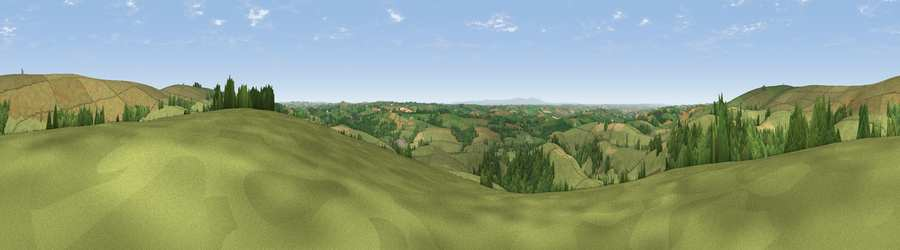

Viewpoint near West Anstey
#10665 in England · top 17% of its area beats it · near West AnsteyThe view, rendered

A 360° render of this exact spot computed from the terrain model, tree cover and land cover — summer colours, afternoon light, calibrated against photographs of famous viewpoints. Real trees, hedges and buildings will differ in detail.
The panorama
Grey silhouette: terrain skyline in each direction (720 bearings, Earth curvature and refraction included). Dashed green: skyline with trees (+15 m) and buildings (+8 m) as obstacles. Blue strip: how far the ground is visible on each bearing.
Where the view opens
Wedge length = distance to the farthest visible ground on that bearing (vegetation-aware). Rings at 10, 25 and 50 km.
What fills the view
76% grassland · 19% woodland · 4% cropland
Angular shares of the visible panorama (visual magnitude), not map area. Landscape diversity 0.30 (0–1 Shannon).
Key numbers
More beautiful places nearby
The staircase of upgrades: each row has a higher view potential than everything closer. Driving times are estimates from straight-line distance, calibrated against real road routing — check an actual route before setting out.
| Place | Direction | Drive | Score |
|---|---|---|---|
| Viewpoint near Hawkridge | NNE · 1 km | ~4 min | 65.1 |
| Viewpoint near West Anstey | E · 3 km | ~7 min | 65.8 |
| Viewpoint near Twitchen | WNW · 3 km | ~7 min | 66.0 |
| Viewpoint near Twitchen | NW · 7 km | ~14 min | 69.1 |
| Viewpoint near Simonsbath | NW · 11 km | ~22 min | 73.1 |
| Viewpoint near Brayford | NW · 13 km | ~24 min | 74.1 |
| Viewpoint near Exford | NNE · 14 km | ~26 min | 77.1 |
| Viewpoint near Luccombe | NNE · 15 km | ~26 min | 84.5 |
51.04282, -3.66709 · source: screening · position refined by local search. Computed location — check access rights before visiting.